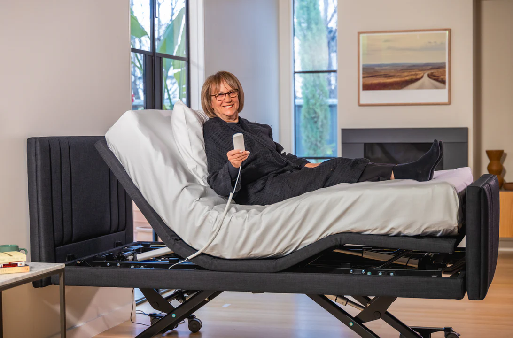
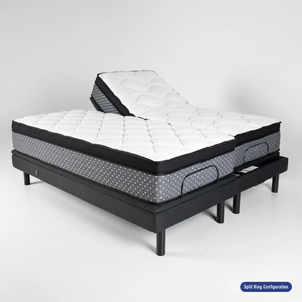

Bryson called me asking me to make enquiries about getting a mechanical bed for mum. Even suggested we get it before she leaves SCUH this time. I balked a little at this but TBH am thrilled that he is on-board with the idea.
It is one I have floated previously to both BJ and mum and received luke warm to cold response. I had once again promoted the idea gently to both mum and BJ today and have received a more positive response. Maybe the time has come for getting a few things done at Cooroora to provide a higher level of safety and care for mum. No more sleeping half the night in shared bed then awakeing in small hours in pain and finishing rest of night sat in lounge dozing or fully awake. Then sleeping during the day.
Some indicative prices and product examples:
Jannali Bed Link to heading

Alivio Jannali Bed King Single - Lakeside Mobility indicative price at Country Care Group KCare Alivio Jannali Bed
Comfort Lift Link to heading

Comfort Lift from Bedside Electric Comfort LiftMattress Link to heading

The subtly named ‘Hospital Ultimate Mattress’ is available through Lakeside Mobility